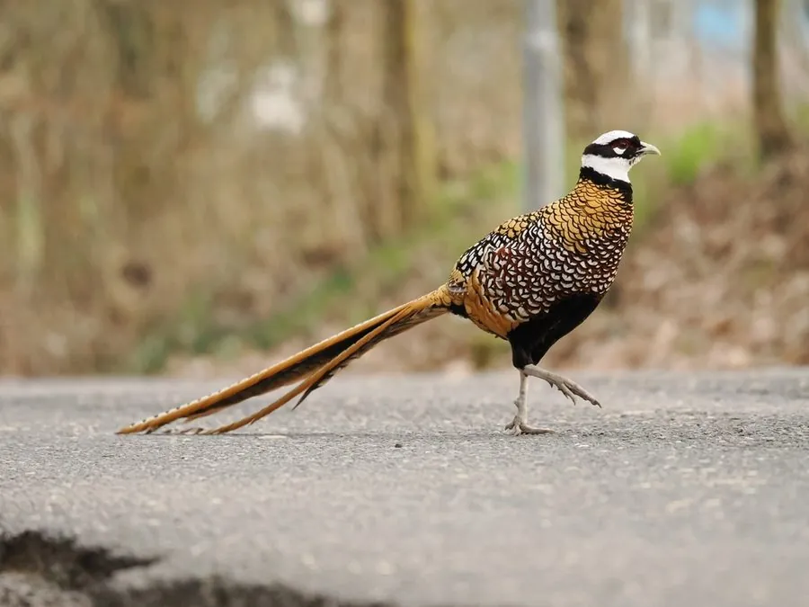

鸟类 · 动物界
白冠长尾雉 Syrmaticus reevesii

中国特有的长尾雉，雄鸟头顶白、身披金栗色羽，尾羽可长达一米半以上，是中国鸟类中最长的尾羽，京剧武生头冠即取其尾羽。
- 分类
- 门脊索动物门纲鸟纲目鸡形目科雉科属长尾雉属
- 栖息环境
- 山地常绿阔叶林、针阔混交林、灌丛与陡坡岩地
- 地理分布
- 中国河南、陕西、湖北、安徽、四川、贵州、湖南等地
- 保护级别
- IUCN 易危（VU）；中国国家一级保护动物；CITES 附录Ⅰ
物种志
白冠长尾雉是体形修长的雉类，雄鸟含尾全长可达 1.5–2.0 米，其中尾羽占去大半，最长记录超过 2.2 米；雌鸟仅约 60 厘米长，体重 0.7–1.5 千克。雄鸟头顶与颈白，眼周鲜红，喉部黑色，背与胸呈金栗色并具黑色羽缘，形成鳞状光泽，尾羽银灰至浅褐，带黑色横斑，羽形修长如带。雌鸟通体棕褐，密布斑纹。
它们是中国中部与北部的特有种，栖息于海拔 400–1800 米的山地常绿阔叶林、混交林与灌丛，尤其偏爱有陡坡与岩石的林地。性机警，善于在地面奔跑，受惊时能短距离急速起飞。食性以植物为主，取食嫩叶、果实、种子和农作物，也吃昆虫。繁殖期 4–6 月，在地面草丛中筑巢，每窝 6–10 枚卵，雌鸟孵卵约 24–25 天。因长尾羽被用于戏曲头饰与标本贸易，加之森林采伐，其种群数量大幅下降。
形态与习性
- 体长雄鸟含尾可达 1.5–2.0 m，雌鸟约 60 cm
- 尾羽长度中央尾羽可达 1.2–1.5 m，最长记录超过 2.2 m
- 体重约 0.7–1.5 kg
- 食性嫩叶、果实、种子与农作物，兼食昆虫
- 繁殖4–6 月地面筑巢，每窝 6–10 枚卵，孵卵约 24 天
- 文化用途长尾羽曾用于京剧武生头冠与戏曲道具
- 种群现状野外数量估计不足 2 万只，呈下降趋势
趣味知识
- 雄鸟的中央尾羽能长到一米半以上，是中国尾羽最长的鸟类。
- 京剧武生头冠上那两根飘逸的长翎，传统上就取自白冠长尾雉。
- 它飞行时尾羽拖在身后，转向时能靠长尾灵活调整方向。